{{ title }}
This writing aims to be an introduction to the Discrete Fourier Transform (DFT) for those without any prior knowledge of regular Fourier series or transforms.
Motivation
The motivation behind Fourier transforms is pretty simple: you want to find out what sinusoidal components your signal has, and retrieve their respective amplitudes and frequencies. This is indeed simple if you have already worked with such stuff, but it raises a lot of questions for a complete beginner. What is a signal? Why do I want to find its frequencies? Why do I use sines and cosines to accomplish this? To make everything clear, let's answer those questions. Or you can skip this part.
Signals are usually divided into four categories by two main characteristics. They can be discrete or continous in time (the domain) and similarly have discrete or continous values (the codomain). For now, making a distinction in the codomain serves no purpose, so we are left with two groups.
In practice you have discrete signals, for example measurements from a sensor with a timestamp and a numeric value. The blue dots mark such a signal with five measurement points. These points can be easily represented programatically by an array with pairs of numbers as items.
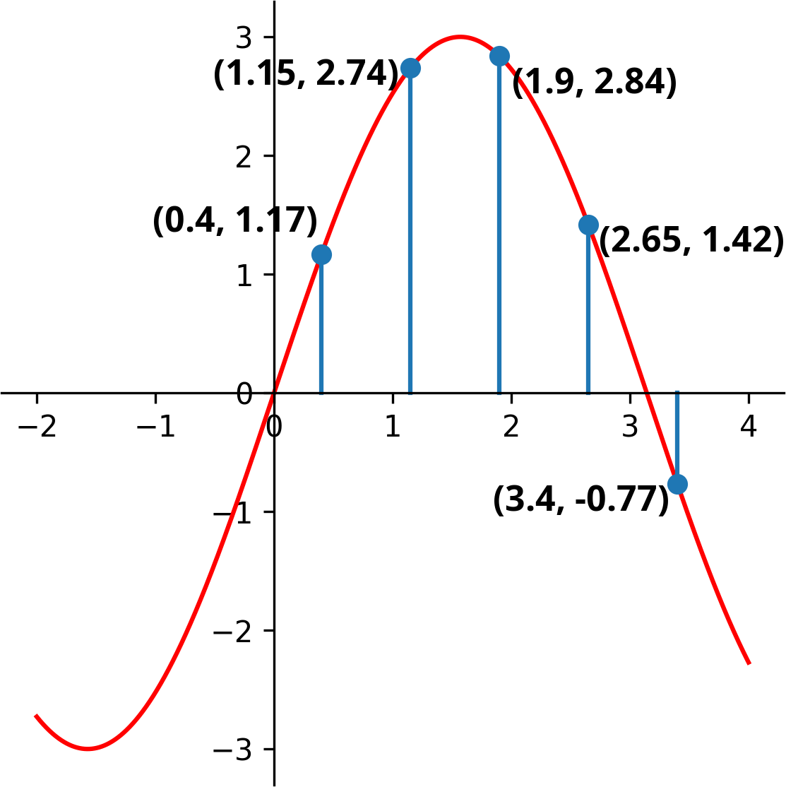[(0.4, 1.17), (1.15, 2.74), (1.9, 2.84), (2.65, 1.42), (3.4, -0.77)]
The red line represents a more abstract signal (3*sin(x) in this case). It is defined for every x, but dealing with concrete values gets harder as the functions composing the signal get more complex. At first glance it may seem that the blue signal samples the red one, as it fits perfectly in those points, but why would that be the case?
It seems abstract functions would serve a purpose in inter- and extrapolating values, if they would be unequivocally expressible. Without diving into the realm of interpolation we can say that there won't be a bijection between discrete and continous signals, but also that the first signal clearly fits our measurements more, where 'clearly' remains an ambigous term for now.
There are also two things worth mentioning about the blue signal:
- The time scale is completely arbitrary. There is no real meaning behind t=0, so we can shift the whole signal left by 0.4. When we are dealing with only one signal, there is no reason not to fix its start point at zero time as leaving the offset at 0.4 would only make our calculations more complicated.
- Samples are taken periodically at a fixed rate. That might not always be the case, but still is most of the time so using this simplification should be fine for now. As said above, the time scale is arbitrary, so we can rescale the whole signal to have its samples taken at positive (and zero) integer time values. Of course you are probably dealing with physical quantities, so the time scale is important and should not be completely discarded, but more on that later.
So, our signal looks like this now:
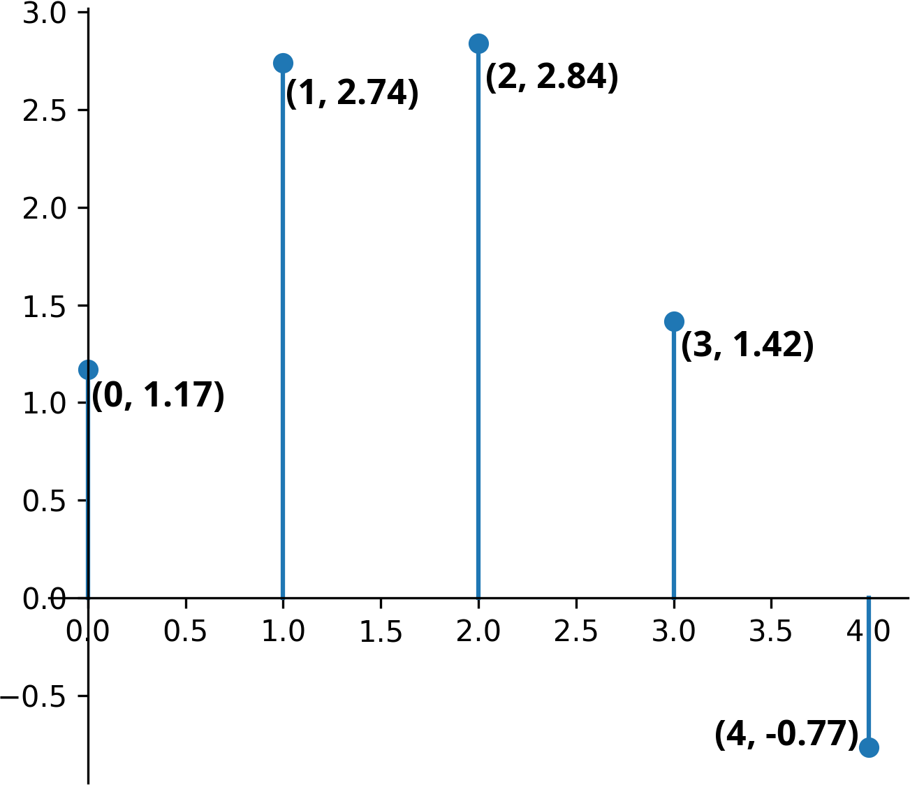Also the array form is trivialized even more, no need to store indices anymore:
[1.17, 2.74, 2.84, 1.42, -0.77]
And lastly, Why do I use sines and cosines? First, they are periodic functions. You might say a square wave is periodic as well and way easier to make calculations with. But these signals are often pushed through integration and derivation steps, and it is rare to find such function that can survive these methods without minor alterations. Sine derives into cosine, and vica versa with a factor of -1, thus making repeated derivation return the original function after four steps. Exponential and hyperbolic functions also have this property (and are closely related), but they are not periodic in the real domain. A flat constant zero function satisfies both properties, but is completely uninteresting.
Synthesis and analysis
The thought line of the following section (and some code examples) was largely based on ThinkDSP (chapter 6 and 7), but with some alterations, whenever I felt more clarification is needed.
Our building blocks are cosine signals, which have a frequency (f) and an amplitude (A) as parameters (and a phase which we conviniently ignore for now).
{{ formula("simple_cosine.tex", 32) }}The 2 * π * f part is often abbreviated as ω (greek small omega), but we'll stick with the 2πf notation.
We can build more complex signals by summing some of these cosines (with different frequencies and amplitudes).
{{ formula("sum_cosine.tex", 20) }}As the example shows, even the sum of three cosines can result in complex-looking functions:
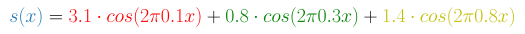 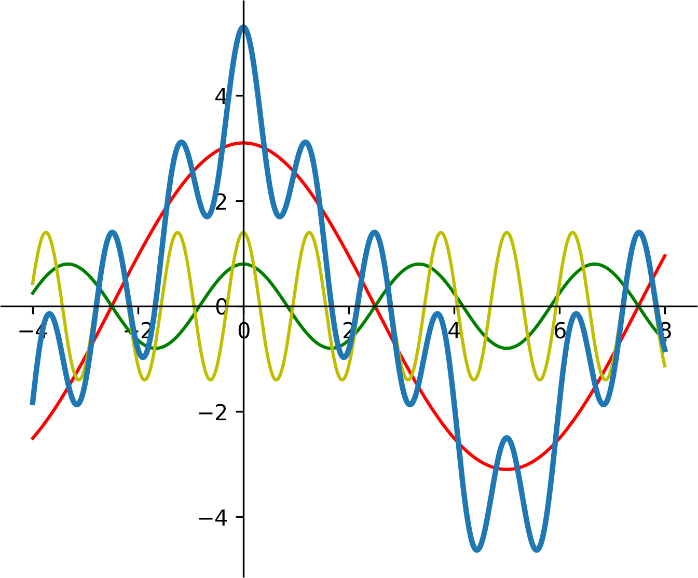Instead of preceiving this signal as a sum, we can treat it as an inner product of two vectors, one being the amplitudes, and the other the cosine terms.
{{ formula("synthesis_vectors.tex", 28) }}What do we gain from that? Nothing, as long as we are plugging our x-es to this function one by one. But generally, if this signal is a generator, we are going to take more than one sample. With multiple x-es and frequencies the cosine vector expands into a matrix and now we have a matrix-vector multiplication.
{{ formula("synthesis_matrix.tex", 24) }}Maybe it is more clear with a different notation (hover on result elements to see the inner products):
This step is called synthesis where the result signal is built from our base components. The reverse of this is analysis where we know the frequencies and the result signal (the samples in our case) and the variables under question are the amplitudes. If you are familiar with Gaussian elimination, you already know the next step, if not, read it up. Basically we have three equatations for three unknown variables (A1, A2, A3). The cosine terms might look scary at first glance, but since all of their variables are constant, the terms themselves will be constant as well. We can sample a continous signal as many times as we want, but it is easy to see that we need at least as many samples as many frequencies we have; and that further samples add no information to our system of equatations.
Well, the above sentence is not entirely true, there are edge cases, where even though we have three equatations, the system won't be solvable. If a column is full of zeroes, or two columns are equal, our solution will be ambigous. This translates nicely into the world of signals, if two our frequencies sync with the sampling frequency, they are going to measure the same value each time. With a sampling rate of 1 and two integer frequencies, we will never find a solution. Also a full zero column tells us nothing about the amplitude, as seen below:
Instead of solving a linear system of equatations each time, we can get the same result by taking the inverse of this cosine matrix. The edge cases discussed above correspond to the determinant being zero, thus the inverse of the matrix not existing, but otherwise this is the way to go. To be honest, this is the most important concept in this whole article, and if you can understand the Gaussian elimination or the inverse method, you understood DFT as well, as from now, only the details of this matrix and the inverse calculation methods will change.
You can verify this with a few lines of code. A python example below using the values seen before:
{{ code("analysis_example.py") }}But hey! - you might ask - how do I find the frequencies as well? It is sure nice to be able to calculate the amplitudes, if I already know what frequencies my signal has, but that's not the case! Yes, but before we make a choice on the frequencies to test for, there is another, even more serious problem.
In the beginning of this section I made the not explained decision of solely using cosines as our building blocks instead of sines or both. What happens if we try to approximate a sum of sines by cosines? Let's modify our last example slightly:
{{ formula("sum_sine_concrete.tex", 20) }}There is no reason to sample the resulting signal at zero time, as it will always be zero there. Don't worry, in that case we'll just take our samples at t = {1, 2, 3}.
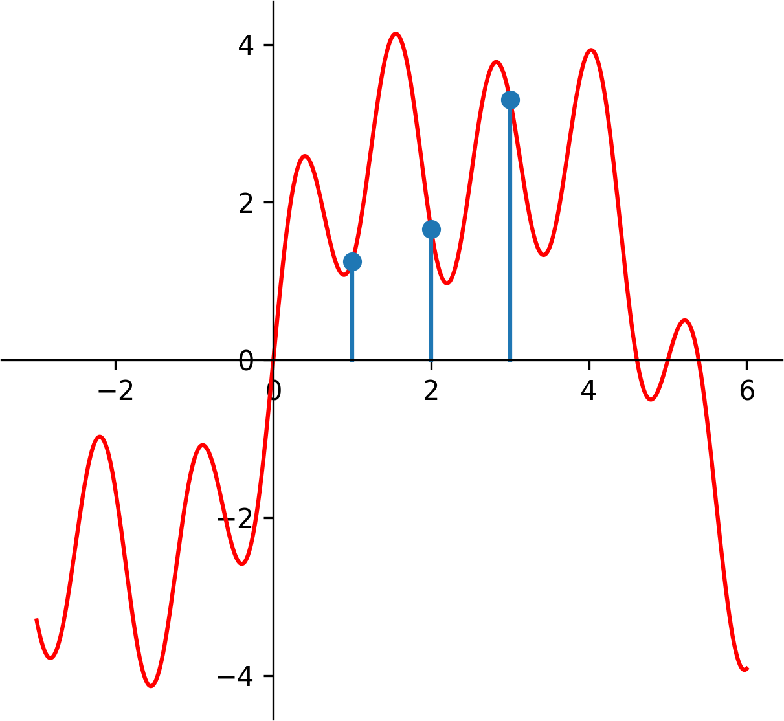This results in S = [1.25, 1.66, 3.30] {{ code("analysis_sine_pt1.py", "python") }}
And now doing the analysis with cosines
{{ code("analysis_sine_pt2.py", "python") }}What we get back from this is A_calc = [3.64, 2.41, -3.06]. Not even close.
Exponentials
The first naïve idea would be: Well, why don't we use both? Naïve ideas are not necessarily bad ideas, so let's see how this turns out. Our building blocks are now sums of sine and cosine functions.
{{ formula("expo_sin_cos_1.tex", 24) }}We can normalize A and B, by dividing them with the square root of the sum of the two terms squared
{{ formula("expo_sin_cos_2.tex", 24, amsmath=False) }}Let's use C as a shorthand for {{ formula("expo_sin_cos_3.tex", 18, inline=True, amsmath=False) }}, and since the sum of A/C and B/C squared is 1 now, we can find a φ (greek phi) such as
{{ formula("expo_sin_cos_4.tex", 24, amsmath=False) }} {{ formula("expo_sin_cos_5.tex", 24, amsmath=False) }}Dividing the second equatation with the first, the Cs cancel out and we are left with a nicer formula
{{ formula("expo_sin_cos_6.tex", 24, amsmath=False) }}And now we can get the value of φ by plugging B/A into the inverse of tangent (also don't forget to check if A is zero). Our signal looks like this now:
{{ formula("expo_sin_cos_7.tex", 24) }}
Multiplied by C what we have right now is an identity, namely the cosine of the difference of two angles.
{{ formula("expo_sin_cos_8.tex", 24) }}We could do some rearrangement since cosine is an even function. Also we have shown (not rigorously) that with just a sine and a cosine, we are able to express any sinusoid shifted with a phase φ. There are also more intuitive ways to reach this conclusion. Cosine is an even function, and even functions can be used to analyse even signals, and the same can be said for sine, except it is odd and is useful for odd signals. And since you can divide any signal into even and odd sections, you can analyse both parts by using only sines or cosines.
For me, the geometrical view was the most intuitive. We can treat sine and cosine as projections of a simple, two-dimensional circular rotation.
We can represent this system, the red dot with a single parameter, namely the angle, and than define a function rot, that accepts a number, and spits out its cosine and sine as a pair.
{{ formula("exp_rot.tex", 24) }}If you are familiar with complex numbers, the exponential form does the same and probably makes more sense to you than my arbitrarily defined function. Otherwise you are probably wondering where the hell did e and j come from, but don't worry about them; substitute rot() in your head. Furthermore, you might have seen this formula but with i instead of j, it is just a matter of notation which symbol to use.
{{ formula("exp_form.tex", 24) }}Using complex numbers has a few advantages:
- Multiplying a complex number with a real number scales the complex number, but keeps the angle. 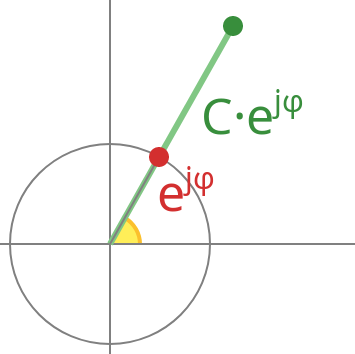
- Multiplying two rotations (complex number with length one) yields a third one with its angle being the sum of of the two original angles due to the exponential identities. 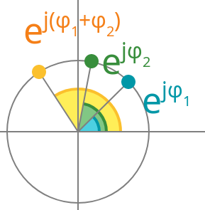
Usually when multiplying two complex numbers, scaling and rotation both take place.
But how all of this helps us in practice? Well, take a step back. We have shown that from a sine and cosine pair we can handle all kinds of phases. The reverse is also true: for any phase, a sine and cosine pair is sufficient. This increases the width of our matrix M by twice, and to keep our system of equatations solvable, we'll need to take twice as many samples now. Remember, for each frequency component, we have now two unknowns to solve: the sine and cosine, or in other terms, the amplitude and the angle.
Add a few phases to our last example:
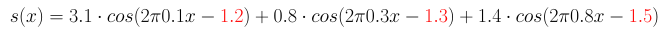With six sample points from 0 to 5 our signal looks like this:
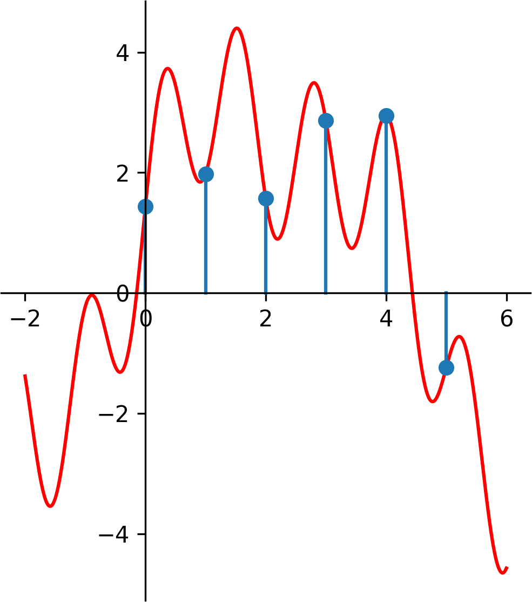
Synthesizing this signal, we get S = [1.44, 1.98, 1.57, 2.86, 2.95, -1.24]
{{ code("expo_analysis_example_syn.py") }}And now doing the analysis on these values, we get our original amplitudes and phases back (a small rounding error occurs since we rounded S to two digits). Also this code example uses slices, in case you haven't seen them; [:3] selects the first half or the array (cosines), while [3:] selects the last (sines).
{{ code("expo_analysis_example_an.py") }}As we said earlier this method works perfectly if we already know what frequency components our signal has. Now it's time to pick some frequencies to test our completely arbitary signal for. Since the possible range of frequencies spans from -infinity to infinity, this is not a trivial task. First, we can see that if we take our samples at integer times (0, 1, 2), two frequencies with the same fractional part will be indistinguishable, as they will have the same value in our measurement points. You can see below with frequencies 0.1, 1.1 and 2.1 (also our sampling frequency is ONE in this and later examples):
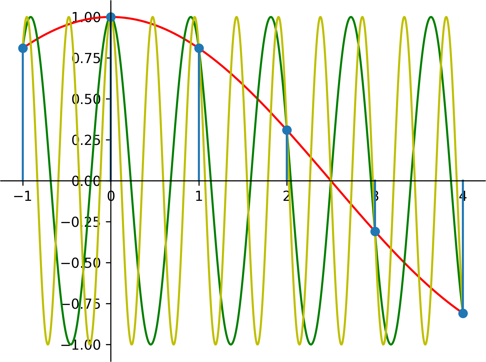So now, we only have to have to consider a range of length one. We'll pick the simplest, from zero to one. We can also simplify this further, for cosines the values taken at a frequency f will be the same as at (1-f), as you can see with freqs 0.3 and 0.7:
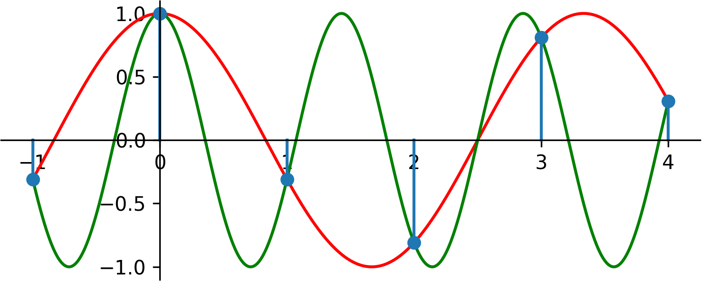For sines, the samples taken for those functions will be the opposite, and they'll add no information as well. Since we shown above that a signal with any phase can be decomposed into non-shifted sines and cosines, we can only measure a range of length 0.5 with required accuracy.
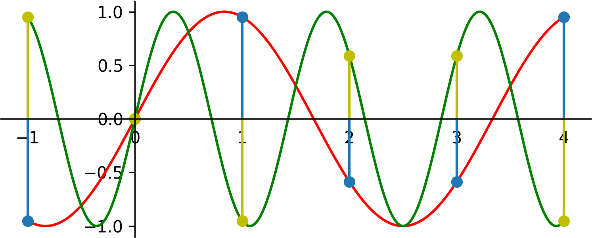This half rate is called the Nyquist frequency, and it is the reason why CDs have a sampling rate of 44100 Hz, while the max frequency audible to human ear is just 20000 Hz. Why this sampling rate is even higher than 40000 Hz will be discussed later.
Discrete Fourier Transform
We are only a few steps away from disclosing the full blown DFT. In fact, we only have to create a range of frequencies from zero to one and use complex exponentials in our matrix seen before. The resulting complex amplitudes from the DFT will be symmetrical to 0.5, so we can discard anything after the Nyquist frequency.
This is a rather unorthodox way to introduce DFT. Most texts I've seen introduced complex signals first which simplified a lot of things. The signals were complex, the amplitudes were complex and the matrix was complex as well with exponential e^(jφ) terms handling all kinds of phases. And since any single term held twice amount of value or information now, the Gaussian elimination worked just as well as before when we only had cosines and real numbers. But this all came at the cost of complex signals don't really exist and finding a real world use case for them would have been really hard. Also I stated in the motivation section, that we are going to analyse real signals, so why would we switch to complex ones suddenly? After the definition, we would have seen, that for the special case of real numbers, the spectrum (range of amlitudes) is coincidentally symmetric, so we can discard half our results, but this way you've seen why: to extract twice as much information from our system (amplitude and phase), we had to supply twice as much data as well.
Let's see how such a synthesis matrix looks like for N=5. To get real values as a result, we would have to construct our amplitude vector in a special way to be symmetric, so now we aren't going to use this matrix for synthesis, but to help to construct our analysis matrix.
{{ formula("dft_idft_matrix.tex", 24) }}What does this mean? Cosine is replaced with e to the jth power, the 2π term is there, since we are not using the angular frequency (ω) notation. The first number denotes the time (each row belongs to a single sample at a given time, and as you can see, this term stays constant in a row. The second number denotes the frequency in the range 0 to 1. N is the number of samples we have, and as a general thumb of rule, the more samples we have, the more precise our frequency resolution will be (but this should be trivial for now).
You can see the matrix – while not portrayed this way – is symmetric to the diagonal. Also, the first row and column contains a zero in the product of the exponent which causes these terms to always be 1. The first column gets a special meaning: the DC term, which shows how much our signal is shifted up or down by a constant factor.
Since each term in this matrix is a rotation, we can find a base rotation, one of which all terms are exponents of.
{{ formula("dft_wdef.tex", 28) }}For each sample size belongs a different N thus a different base rotation, but I am going to drop this N from the subscript of W, if the value of N is clear from the context. We can rewrite our matrix now in terms of Ws.
{{ formula("dft_idft_wmatrix.tex", 24) }}Much nicer, right? We can do even better, if we take a look at how the exponentials of W look like:
While the range of possible W exponents has a length of 17 (from 0 to 16) and there are 10 distinct exponents of W, due to the periodicity, we will only have five different rotations (or N in the general case). Our further simplified matrix now looks like this:
{{ formula("dft_idft_wmatrix_simp.tex", 24) }}"Hey, each row besides the first is just another permutation of 0, 1, 2, 3, 4" – you might think now. But no, this only happens because 5 is a prime number. See the example with N=4 and the third row:
{{ formula("dft_idft_wmatrix_simp4.tex", 24) }}While this matrix is fun to play with, we still haven't seen why that would be useful for us. To see this in practice, we will need to do some analysis with this matrix, or to be more precise, with its inverse. Finding the inverse of a matrix is really a grueling task. For an n by n matrix, the time complexity of inversion is O(n^3) which is huge. Suppose we have a 1 sec. sound file sampled with the standard CD sample rate of 44100 Hz. That means 44100 samples as well, and to analyse the frequency components of this file, we would roughly need 85 766 121 000 000 operations. Eighty-five trillion (!), which is completely unfeasible. Can we find a faster inversion method? The answer to these kind of questions is always yes, otherwise the DFT would be trash, and I wouldn't have introduced it in the first place.
As a beginning, take a look at what the sums of each columns are:
The rotations always cancel each other out except in the first column, where each rotation is facing rightwards and they amplify each other. What happens if we divide a column with another column elementwise? If they are the same column, the obvious answer is that we get a column full of ones: the same column as our first. Otherwise the resulting column will have the index of the difference of the indices of the two operands as seen below, where the top row marks the index.
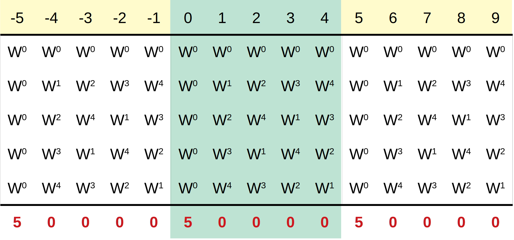This is all nice and good: 2-2 is 0 indeed. 3-1 is 2, and as we can see the result wraps around, so in the third row W^1 / W^2 = W^(-1) = W^4. But what about 1-3? How can we have negative indices? Turns out that since frequencies with the same fractional part are indistinguishable, the whole matrix can be written and pasted infinitely many times, placed in a row. 1-3 is -2, which will correspond to the same column as 3. The crucial thing here is that if two indices are different, the difference of their columns will never be a full one column (-5, 0, or 5), which is easy to prove. If we were doing multiplication instead of division, we would be adding those indices, and two different indices could produce a full one column: 2 plus 3 is 5.
How does any of the above help in finding the inverse of this matrix? Well, I said earlier that the matrix is symmetric, which means that I can divide a row with a column, a column with a row or a row with a row alongside the same principles. If I were to multiply this matrix with itself, what would I get is columns multiplied by rows elementwise, than taking the sum of the resulting vector. Almost good, except as I said, we need to do a division instead of multiplication. To do this, we can define an operation called conjugation, which turns the exponent negative for a complex number.
{{ formula("dft_conjugate.tex", 28, amsmath=False) }}If we take the conjugate of the whole matrix (elementwise) and multiply it with our original matrix, this is what we get:
If we multiply a matrix with its inverse, we should get the identity matrix back (only the main diagonal elements are one, everything else is zero). This is not yet the case, but we are very close. We have three options to finish this now.
- Divide the conjugate matrix by N, so we can solve our original problem easily.
- Divide both matrices by sqrt(N), so the whole structure remains kind of symmetric.
- Redefine our starting matrix by dividing it by N, so we don't have to do any division now.
As unintuitive it sounds, most real world applications use the third option. Taking the square root of a number is often slow, and so it is not preferred in practice.
What we have now is the DFT matrix. I recommend following that link to check the differences in notation. The article uses ω, which is the conjugate of our W. It also divides the matrix by sqrt(N) to retain symmetry. Because of this, we can also conclude that this matrix is unitary, which means that the inverse of the matrix is its own transposed conjugate. Transposition mirrors the elements by the diagonal, but it is an unnecessary step in our case since the matrix is symmetric anyways.
And now finally, we can see what the Discrete Fourier Transform really is: a multiplication with a matrix. Let's see how it looks like in practice:
{{ code("dft_example.py") }}Our frequency bins are now 0.0, 0.1, 0.2, 0.3, ..., 0.9. Plotting the absolute values shows the symmetry.
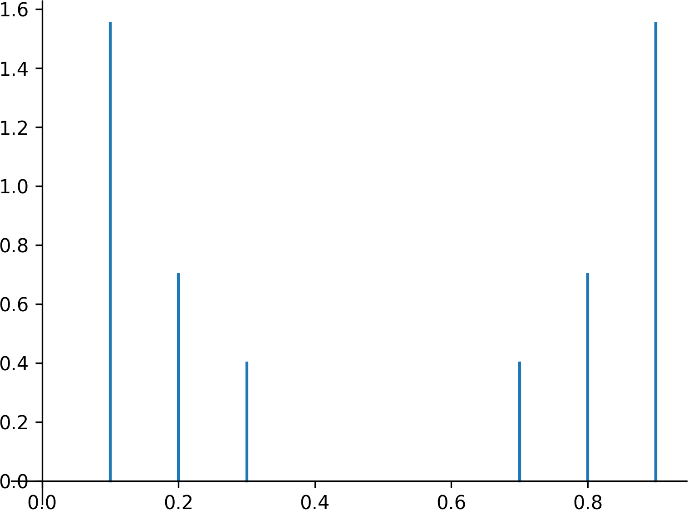
We can see (actually no, but believe me) that the DC term (0 freq.) has no pair, but excluding that, every other frequency bin has one. 0.1 is the same as 0.9, and so on; again, nothing surprising here. To extract the amplitudes properly, we shouldn't discard the last half simply, we should add them to the first, whilst keeping the symmetry. After that the resulting amplitudes in our example are the following:
| Frequency bin | Amplitude |
|---|---|
| 0.0 | 0.001 |
| 0.1 | 3.101 |
| 0.2 | 1.399 |
| 0.3 | 0.801 |
| 0.4 | 0.001 |
| 0.5 | 0.001 |
Ignoring rounding errors, we did a good job. The highest frequency component (0.8 with amplitude of 1.4) got degraded into the frequency bin of 0.2 as it should have happened. Notice that we also extended the number of samples to 10. The results we would have gotten from 6 bins would have been usable, but they wouldn't have been ideal for demonstrating that our method, the DFT works indeed.
Our last graph, where we plotted the amplitudes against the frequency bins is called the spectrum. To be honest I haven't given a formal definition of the DFT yet, which maybe puts the resulting function in perspective. In practice, our signal is comprised of lots of samples, so when plotted, it looks like a continous signal. The same can be said for this spectrum; F(f) is just another discrete but continous looking signal. Also if you look at definitions from other sources, you'll se that they prefer the usage of sqare brackets whenever dealing with discrete signals, so do I now.
{{ formula("dft_definition.tex", 24, amsmath=False) }}And as we said we do the division by N in the inverse part.
{{ formula("dft_inverse.tex", 24, amsmath=False) }}
Summing up the symmetrical parts of the spectrum is a manual task, but don't worry, there are specific functions in most DFT/FFT libraries to help you deal with that. Here, FFT is just a fast method to calculate DFT and the r before that in the function name stands for real, when our signal consists of real values:
{{ code("dft_rfft.py") }}The length of the resulting spectrum is 4097. Notice something odd: even though rfft roughly halved our values, there is still an off by one error in both this and the earlier example. From ten samples, how could we extract the amplitudes and phases for not just five, but six frequency bins?
The DC term has no phase, since it is a constant function; shifting it left or right does not change its shape. With that we gained an additional value, but we still need one more. Turns out that the Nyquist frequency holds no phase as well: for sine parts, the value of this component is always zero, and for cosine parts the value oscillates between 1 and -1. The only way to change its value by shifting is to take its opposite, but even in that case, there is no need to store the phase for this frequency as well. Everything is in order now, from 10 samples, we could extract data for 4 complex numbers and 2 reals. 4*2+2 = 10
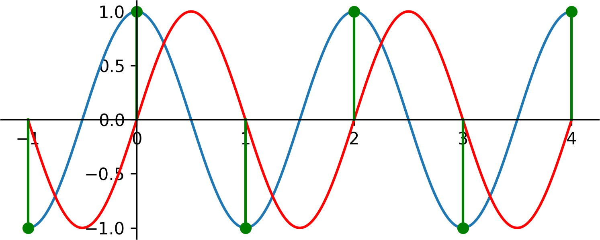At last we can answer the question why CDs have a sampling frequency of 44100 Hz, slighly above 40000 Hz. Sampling near the Nyquist frequency can be unreliable as we saw.
Check out Part 2 here.